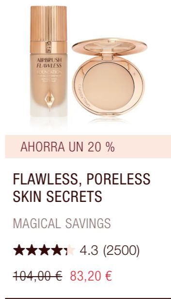
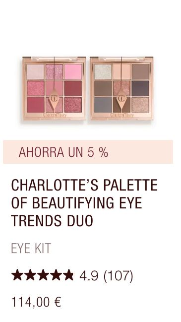
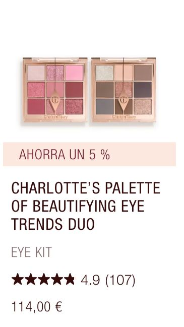

L´Oreal paris
Los comienzos de L’Oréal en 1909: Un revolucionario color para el cabello y un fundador visionario La fundación de L’Oréal en 1909 coincidió con la primera idea brillante del químico Eugène Schueller. Las mujeres deseaban usar el cabello corto y rubio, abrazando la tendencia de un estilo juvenil.

 


Regresar